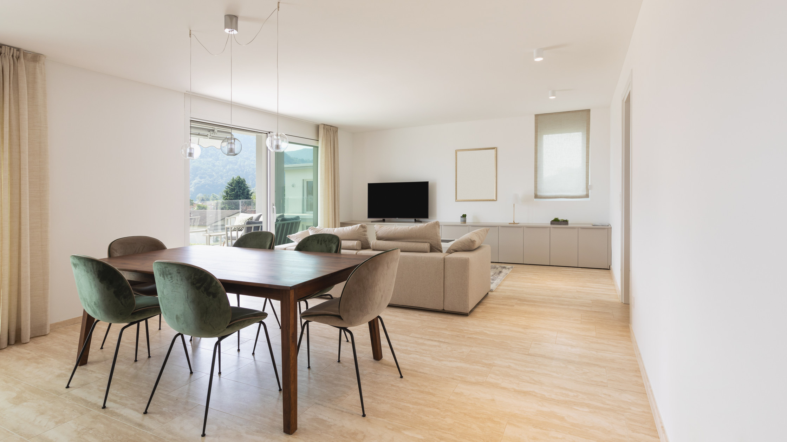

壁紙
部屋の印象を、明るく心地よく。壁紙の張り替えで、色や柄、素材を見直します。過ごし方や家具との組み合わせ、お手入れのしやすさも考えます。
毎日過ごす室内を、心地よく、暮らしやすく。壁紙・床・間取り・収納を、今の暮らしに合わせて見直します。

部屋の印象を、明るく心地よく。壁紙の張り替えで、色や柄、素材を見直します。過ごし方や家具との組み合わせ、お手入れのしやすさも考えます。
足元から、過ごしやすい部屋へ。床材の張り替えや傷んだ部分の見直しなど、部屋の用途に合わせて整えます。足ざわりや掃除のしやすさも大切にします。
家族の暮らし方に合う間取りへ。部屋のつながりや移動のしやすさを見直し、間仕切りや扉の位置を検討します。建物の構造や状態を確認し、可能な範囲で計画します。
物の置き場が決まり、片づけやすい部屋へ。棚や収納スペースの配置を見直し、しまう物の量と使う場所に合わせて、取り出しやすい収納を考えます。
壁紙の汚れやはがれ、床の傷が気になる。傷んだ場所の状態を確認し、張り替える範囲や素材を見直して、気持ちよく過ごせる空間を考えます。
家具を置くと通りにくい、部屋が暮らし方に合わなくなった。毎日の動きや部屋の使い方を整理し、間仕切りや扉、家具の配置を検討します。
収納が足りず、よく使う物が出したままになる。物の量や使う頻度に合わせて、しまう場所と取り出しやすさを見直します。
室内のお悩みや、どのように暮らしたいかをお聞きします。
壁や床の状態、部屋の寸法、家具や収納の配置を確認します。
確認した内容をもとに、素材や配置、工事範囲をご提案します。
家具の移動や部屋の使用への影響も考えながら、日程を調整します。
決まった内容に沿って工事を進め、仕上がりを確認します。
好みの雰囲気や、今の室内で気になっていることからお聞かせください。部屋の使い方やお手入れのしやすさを整理しながら、素材を一緒に考えます。
建物の構造や壁の役割によって、変更できる範囲が異なります。現地で確認し、難しい場合は扉や家具の配置など、別の方法も検討します。
工事の場所や範囲によって異なります。部屋の使用や家具の移動、音やほこりへの影響を事前に確認し、暮らしへの負担を考えながら進め方を検討します。